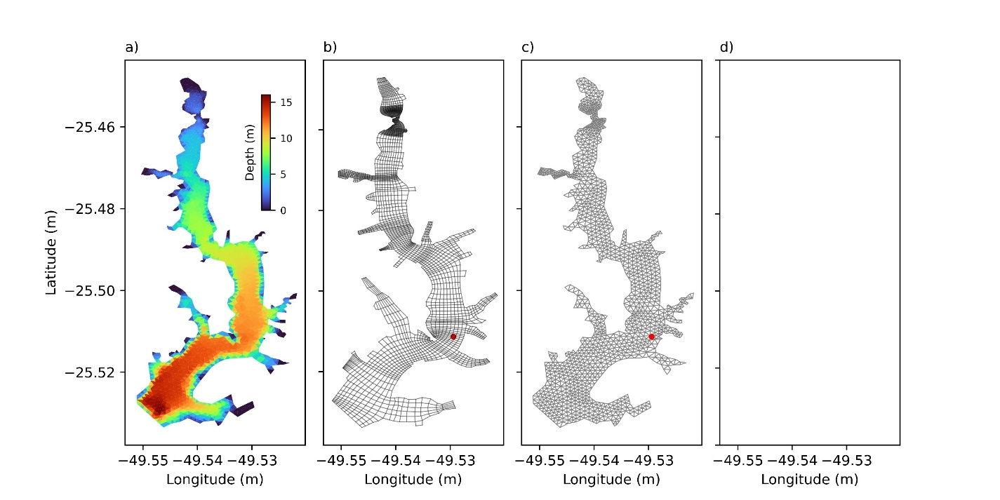

Research project · Physical Limnology
MixLake
Physical limnology of lakes and reservoirs
A reservoir is only as manageable as it is predictable. MixLake turns the physics of internal waves and turbulent mixing into a working theory, a validated 3‑D model, and an open-source tool — so that a stratified lake's hidden circulation stops being a black box.
Why mixing matters
Reservoirs don't fail suddenly. They drift.
Water-supply reservoirs are essential for drinking water, flood regulation and ecosystem health, yet they are increasingly threatened by eutrophication and climate change. Understanding how these systems mix and circulate is fundamental for predicting water quality.
Within a stratified reservoir, internal hydrodynamics govern the transport of heat, oxygen, nutrients and sediments, shaping oxygen depletion, algal blooms, greenhouse-gas emissions and ecosystem functioning.
Most prediction tool, including the widely used Wedderburn number, assume idealized rectangular basins, while real lakes and reservoirs have sloping bathymetry that fundamentally alters internal waves and mixing. MixLake addresses this gap by developing new theory for realistic reservoir hydrodynamics.
Drag the slope — watch the internal seiche
Subcritical: the wave shoals, breaks, and its energy converts into a turbulent mixing patch at the boundary.
Specific objectives
- Simulate how bottom slope shapes the generation of internal waves
- Simulate how periodic winds excite internal seiches and drive turbulent dissipation across different bathymetries
- Refine classic lake‑dynamics models so they're usable by public agencies and other researchers
- Build, calibrate and validate a 3‑D unstructured‑grid hydrodynamic model of the Passaúna Reservoir
- Compare the unstructured‑grid model against earlier structured‑grid simulations
- Test the new bathymetric theory of internal‑seiche damping against a real reservoir
- Fold the resulting theory into the Interwave Analyzer software
The living laboratory
Passaúna Reservoir
Live map — pan and zoom to explore the reservoir
Map data © OpenStreetMap contributors
Built in 1990 in the Passaúna River basin, this reservoir remains one of the main drinking-water sources for the Greater Curitiba region—and the real-world testbed where MixLake's theory meets observations. Its complex bathymetry, seasonal thermal stratification and extensive monitoring record make it an ideal natural laboratory for investigating reservoir hydrodynamics and validating numerical models.
The Delft3D Flexible Mesh model was calibrated and validated using a full year of continuous observations (March 2018–February 2019) collected during the Brazil–Germany BMBF project Multidisciplinary Data Acquisition as the Key for a Globally Applicable Water Resource Management. The monitoring network included an 11-sensor thermistor chain (±0.1 °C) and an ADCP at the central station, a meteorological station located 4 km from the reservoir measuring wind, radiation, humidity and air temperature, four rain gauges coupled to the LARSIM hydrological model to estimate tributary inflows, hourly water-level and withdrawal records from SANEPAR, and a high-resolution bathymetric survey used to construct the computational mesh.

From theory, to model, to tool
Three goals, in sequence
Each goal builds on the last — a new theory of wave damping, tested against a real reservoir, then handed to practitioners as software. Click a goal to open it.
Internal seiches — standing internal waves — are one of the main sources of turbulent kinetic energy in a stratified lake. They regulate oxygen exchange with sediment, phytoplankton dynamics, and even fish movement. Classic two‑layer, rectangular‑basin models miss what happens once the lake bed slopes.
Method — 50 non‑hydrostatic 3‑D experiments (Delft3D), varying bottom slope, lake length, and wind‑driven Wedderburn number, plus 6 more with periodic winds.
Product — a non‑parametric index predicting whether — and for how long — internal waves persist over a sloped bed (de Carvalho Bueno et al., 2026; Limnology and Oceanography).
The equation — the calculator opposite computes the project's bathymetric critical parameter At: the bed slope weighed against the water column's stratification and the internal seiche's own oscillation frequency.
$S$ bed slope (=$\tan\alpha$) · $\overline{N}$ mean buoyancy (Brunt–Väisälä) frequency · $f$ internal‑seiche frequency, the inverse of its period $T$ · $g'$ reduced gravity · $H$ total depth. $A_t<1$ → subcritical, the seiche is progressively damped by the slope (most strongly below $A_t\approx0.4$); $A_t>1$ → supercritical, the slope's effect is negligible and the basin behaves like a flat‑bed lake.
Calculator — bathymetric critical parameter
Aₜ < 1 → subcritical: the slope damps the internal seiche. Aₜ > 1 → supercritical: the slope's effect is negligible, and the basin behaves like a flat‑bed lake.
Two‑layer stand‑in for Eq. 1 of the project's report: N̄ is approximated as √(g′⁄H) rather than measured from a full temperature profile, and S is taken directly as tan α rather than the local bed angle at thermocline depth.
A 3‑D Delft3D Flexible Mesh model of Passaúna, built on an unstructured triangular mesh, was calibrated and validated against a full year of field data — and compared directly with earlier curvilinear, structured‑grid simulations of the same reservoir.
The payoff of an unstructured mesh: resolution can be refined locally, right where the monitoring station sits, without paying the computational cost of a uniformly fine grid everywhere.
Model skill was judged against temperature profiles, horizontal velocities and turbulent dissipation rates, using correlation and centred RMSE against observations.
Click to compare the two meshes
Uniform curvilinear grid — same resolution everywhere, including where it isn't needed.
The theory from Goal 1 was folded into Interwave Analyzer, the team's open‑source desktop tool for classifying lake‑mixing regimes, already used to study lake dynamics worldwide. It now reads 2‑D and 3‑D bathymetry along one or two transects and automatically computes Schmidt stability and the Lake Number.
Under the hood: the interface moved from Tkinter to Qt (auto‑detecting PyQt5 or PySide6); a new modular "Additional Parameters" system adds diagnostics without touching the core UI; and the static PDF report became an interactive Plotly dashboard.
Delivered on schedule — and then some
Execution timeline
Every activity planned at submission was delivered with no delays. Along the way, the scope grew: the Additional Parameters system, the interactive dashboard, new limnological indices (Schmidt stability, Lake Number), and a new graduate course — Lake Dynamics, taught at UFPR's Graduate Program in Environmental Engineering — which doubled as a live test bed for the new software.
| Activity | S1 | S2 | S3 | S4 | S5 | S6 |
|---|---|---|---|---|---|---|
| 1 · Non‑hydrostatic model & simulations | ■ | |||||
| 1 · Theory development | ■ | M | ||||
| 1 · Testing on real lakes & reservoirs | ■ | |||||
| 2 · 3‑D modeling of Passaúna | ■ | |||||
| 2 · Calibration (legacy period) | ■ | ■ | ||||
| 2 · Validation vs. older models | ■ | E | ||||
| 3 · Integrating theory into Interwave Analyzer | ■ | ■ | ||||
| 3 · GUI overhaul | ■ | ■ | ||||
| 3★ · Testing in taught course | ■ | ■ | ■ | |||
| 3★ · Additional Parameters system | ■ | ■ | ■ | |||
| 3★ · New limnological indices | ■ | ■ | ■ | |||
| 3★ · Interactive dashboard | ■ | ■ | ■ | |||
| 1,2,3 · Final report & accountability | ■ |
★ activity added beyond the original proposal · ■ execution period · M journal‑article submission · E conference‑paper submission
People & record
Team and publications
Publications from this project
- de Carvalho Bueno, R.; Bleninger, T.; Lorke, A. Internal seiche damping on sloping topography. Limnology and Oceanography, 2026.
- de Carvalho Bueno, R.; Bleninger, T.; Lorke, A. Effects of periodic wind forcing on internal seiches over sloped topography. XXVI Simpósio Brasileiro de Recursos Hídricos, Vitória, Brazil, 2025.
Read the full story
Project documents
The final report covers the complete methodology, results and discussion behind every figure on this page.